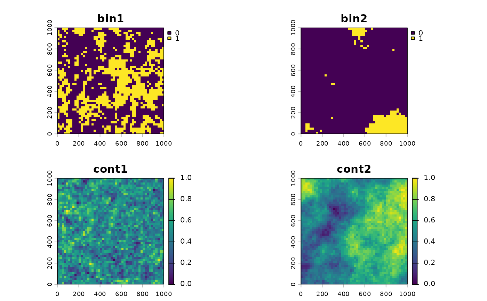
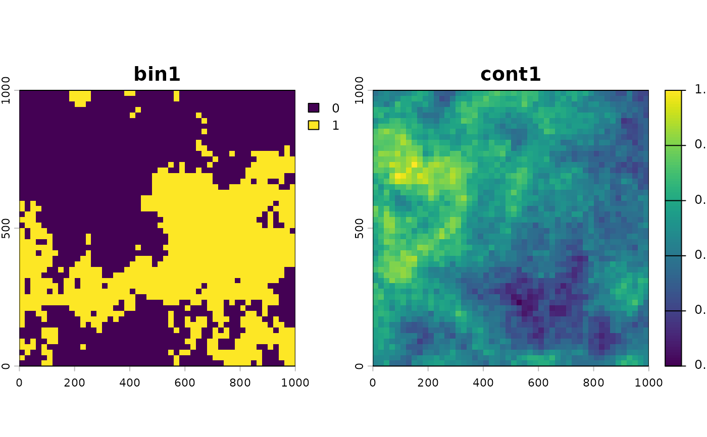

Creates a SpatRaster with four simulated landscape layers, two binary
(0 or 1) and two continuous (0 to 1), for testing and teaching. Each pair
has one layer with a fine and one with a broad autocorrelation range. Use the layers with
sim_dat() or sim_dat_unmarked() to simulate responses at known scales
of effect, then check that multiScale_optim() recovers them.
Usage
sim_rast(
dim = 100,
resolution = 10,
autocorr_range1 = NULL,
autocorr_range2 = NULL,
sill = 10,
plot = FALSE,
user_seed = NULL,
...
)Arguments
- dim
Positive integer. Number of cells along each side of the square raster, so the output is a
dimxdimgrid. Default:100.- resolution
Positive numeric. Cell size (edge length) in map units. The raster spans 0 to
dim * resolutionin each direction. Default:10.- autocorr_range1
Optional positive numeric. Autocorrelation range, in cells, of the fields behind
bin1andcont1. Larger values give smoother, more broadly correlated patterns. DefaultNULLusesfloor(0.05 * dim), and at least 1 (fine-scale autocorrelation).- autocorr_range2
Optional positive numeric. Autocorrelation range, in cells, of the fields behind
bin2andcont2. DefaultNULLusesfloor(0.25 * dim), and at least 1 (broad-scale autocorrelation).- sill
Positive numeric. Variance (partial sill) of the exponential covariance used for all four fields. Each field is rescaled to 0 to 1 afterward, so the sill does not change the returned values. Default:
10.- plot
Logical. If
TRUE, plot the four layers withterra::plot(). Default:FALSE.- user_seed
Optional integer seed for reproducibility. Each layer uses a different multiple of the seed (1, 9, 99, and 55 times
user_seed), so the layers differ but are fully reproducible. The seed also sets the global random number stream. Default:NULL(not reproducible).- ...
Not used.
Value
A SpatRaster with dim rows and columns, cell size resolution,
extent 0 to dim * resolution in x and y, no coordinate reference system,
and four layers:
bin1: binary, fine-scale (autocorr_range1). 1 where the field, rescaled to 0 to 1, is at least 0.55, and 0 elsewhere.bin2: binary, broad-scale (autocorr_range2). 1 where the rescaled field is below 0.4, and 0 elsewhere.cont1: continuous, rescaled to 0 to 1, with a range offloor(0.75 * autocorr_range1)cells, and at least 1.cont2: continuous, rescaled to 0 to 1, with a range offloor(1.25 * autocorr_range2)cells, and at least 1.
The thresholds are on the rescaled values, not percentiles, so the share
of cells equal to 1 in bin1 and bin2 varies from one simulation to the
next.
Details
Each layer comes from a Gaussian random field with the exponential
covariance function sill * exp(-d / range), with d in cells. The field
is simulated with a fast Fourier transform (FFT) on a periodic grid twice
the size of the output (circulant embedding), and one dim x dim corner
is kept, so opposite edges of the output are not artificially correlated.
Each field is rescaled to run from 0 to 1 before it is thresholded (binary
layers) or returned (continuous layers). Version 0.7.48 corrected this
construction, so a given user_seed gives different layers than in
earlier versions.
Two ranges let you simulate covariates that act at different spatial
scales, as when one resource is patchy at fine scales and another varies
broadly across the study area. vignette("v02-user-guide", package = "multiScaleR") uses these layers to simulate zero-inflated, N-mixture,
and occupancy data.
Examples
## Four 50 x 50 layers with 20 m cells (1,000 m on a side)
r_sim <- sim_rast(dim = 50, resolution = 20, user_seed = 555)
r_sim
#> class : SpatRaster
#> size : 50, 50, 4 (nrow, ncol, nlyr)
#> resolution : 20, 20 (x, y)
#> extent : 0, 1000, 0, 1000 (xmin, xmax, ymin, ymax)
#> coord. ref. :
#> source(s) : memory
#> names : bin1, bin2, cont1, cont2
#> min values : 0, 0, 0, 0
#> max values : 1, 1, 1, 1
# Binary layers in the top row, continuous below. Layers ending in 1 are
# fine-scale and layers ending in 2 broad-scale
terra::plot(r_sim)

# Share of cells equal to 1 in each binary layer
terra::global(r_sim[[c("bin1", "bin2")]], "mean")
#> mean
#> bin1 0.4024
#> bin2 0.0872
## Broader patterns: raise the fine-scale range from 2 to 10 cells
r_smooth <- sim_rast(dim = 50, resolution = 20, autocorr_range1 = 10,
user_seed = 555)
terra::plot(r_smooth[[c("bin1", "cont1")]])
